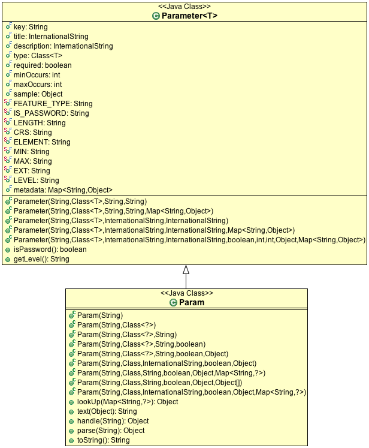

Parameter¶
The connection parameters are described using the Parameter class. There is also a small extension to this idea with the DataAccessFactory.Param class. The extension provided for backwards compatibility, as the methods focus on data entry and has been superseded by the Converters class.
The Parameter is used for:
DataAccessFactory.getParameterInfo()
To describe the keys and values to put into your map. You can use this information to ask your end users the details about their data such as if they want an index created for their shapefile access.
ProcessFactory in gt-process to describe the parameters to geospatial processes.
JDataStoreWizard from gt-swing used to allow users to connect to data in our tutorials.
In all these cases the Parameter are used to describe the contents of a Map<String,Object>.
The class itself is open ended, with only a few well defined restrictions advertised at this time.
The following public fields are available:
Parameter.key : String
Programatic machine readable key or name used to store the value. Suitable for use in a java.util.Map of connection parameters.
Parameter.type : Class<T>
Formal restriction on the type of the Java Object allowed as a value. May be used in conjunction with minOccurs and maxOccurs when a List of values is allowed.
Parameter.title : InternationalString
Parameter.description : InternationalString
Human readable title and description for data entry prompting.
Parameter.required : boolean
Parameter.minOccurs : int
Parameter.maxOccurs : int
Indication of if the value is required, or if more than one value is allowed and any restrictions on the resulting list.
Parameter.sample : Object
A sample, or default, value that can be shown to users as a starting point.
Parameter.metadata : Map<String, Object>
Here is where the Parameter description becomes open ended, as you can add your own restrictions and information to this “metadata” map.
We have defined a series of well known keys (with javadocs):
FEATURE_TYPE - when the parameter.type is a SimpleFeature, this key is used to record the expected FeatureType
IS_PASSWORD
Example use:
// Using IS_PASSWORD to check Parameter.metadata field.setPassword( Boolean.TRUE.equals( parameter.metadata.get( Parameter.IS_PASSWORD ))); // Or use the utility method field.setPassword( parameter.isPassword() );
LENGTH
Example use:
Integer length = parameter.metadata.get( Parameter.LENGTH ); field.setLength( length == null ? 40 : length );
CRS - when the parameter type is spatial (such as a Geometry or Feature) this records the expected CoordianteReferenceSystem
ELEMENT - used to indicate the element type for a List
MIN - min value for any comparable such as a Number, Date or String. Assumed to be the same Class as parameter.type.
MAX - max value for any comparable such as a Number, Date or String. Assumed to be the same Class as parameter.type.
EXT - extension used for selecting Files
LEVEL - indicates if the parameter is suitable for a general “user”, “advanced” user, or only applicable to a “program” (such as a JEE Session).
A number of constructors are available. It is recommended that you use KVP when defining the metadata map (as it was created with this express purpose in mind).
A couple of methods have been defined; to solidify how the metadata map above is used:
- Parameter.isPassword() - check if metadata.get( IS_PASSWORD ) is true
- Parameter.getLevel() - check if level is “user”, “advanced” or “program” (defaulting to “user”).
The Param subclass only offers a few additional ideas:
Param.lookUp(Map<String, ?>)
Used to safely look up a value in a map of connection parameters:
// Server is required; so if iis not available an IOException is thrown String server = (String) SERVER.lookup( connectionParameters ); // May be null as PORT is optional // Is able to type convert a String to an Integer to match PORT.type Integer port = (Integer) PORT.lookup( connectionParams ); if( port == null ){ port = PORT.sample; // default port for PostGIS }Param.text(Object)
Convert object to an appropriate String representation for display to a user.
Param.parse(String)
Used to parse a user supplied String into the required Class indicated by Param.type.
Param.handle(String)
Convert a String to the required Class; with the extra ability to handle arrays of values:
Param DASH = new Param( "dash", int[].class ); int[] arrary = (int[]) DASH.handle("1 2 3 4 5 6");Convert a String (provide by the user) to the required Class indicated by Param.type, handling arrays using whitespace if required.